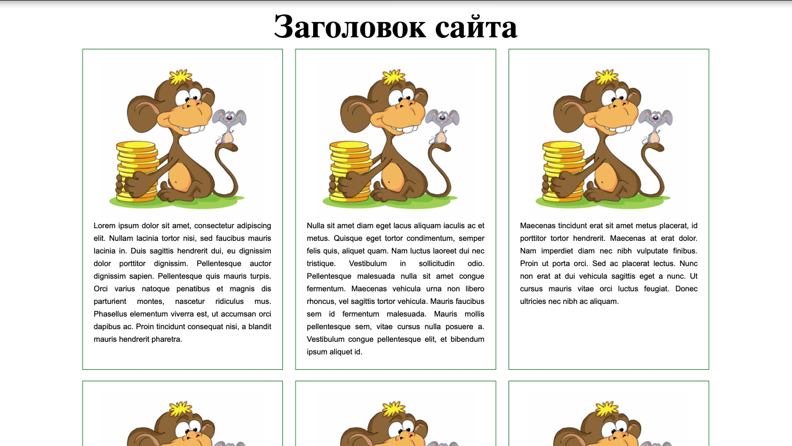

Машинное обучение начинается с данных. Важно, чтобы их было достаточно много и чтобы они были достаточно качественными. Некоторые проекты приходится откладывать на неопределённый срок из-за того, что просто невозможно собрать данные.
Чем сложнее задача, тем больше данных нужно, чтобы её решить. Например, существенные успехи в задачах распознавания изображений были достигнуты лишь с появлением очень больших датасетов (и, стоит добавить, вычислительных мощностей). Вычислительные ресурсы продолжают совершенствовать, но во многих ситуациях размеченных данных (то есть объектов, которым кто-то сопоставил ответ) было бы по-прежнему слишком мало: например, для решения задачи аннотирования изображений (image captioning) потребовалось бы огромное количество пар (изображение, описание). В некоторых случаях можно воспользоваться открытыми датасетами.
Сейчас их доступно довольно много и некоторые весьма велики, но чаще всего они создаются для довольно простых задач, например, для задачи классификации изображений. Иногда датасет можно купить. Но для каких-то задач вы нигде не найдёте данных. Скажем, авторам неизвестно больших и качественных корпусов телефонных разговоров с расшифровками – в том числе и по причинам конфиденциальности таких данных.
Бороться с проблемой нехватки данных можно двумя способами.
Первый – использование краудсорсинга, то есть привлечение людей, готовых разметить много данных.
Во многих ситуациях (например, когда речь заходит об оценке поисковой выдачи) без дополнительной разметки никак не обойтись.
Мы расскажем про краудсорсинг подробнее в соответствующем параграфе.
Некоторые проекты, в первую очередь научные и социальные, используют также citizen science
– разметку данных волонтёрами без какого-либо вознаграждения, просто за чувство причастности к доброму делу исследования животных Африки или формы галактик.
Второй же способ состоит в использовании неразмеченных данных. К примеру, в задаче аннотирования изображений у нас есть огромное количество никак не связанных друг с другом изображений и текстов. Однако, мы можем использовать их для того, чтобы помочь компьютеру понять, какие слова в принципе могут стоять рядом в предложении. Подходы, связанные с использованием неразмеченных данных для решения задач обучения с учителем, объединяются термином self-supervised learning и очень активно используются сейчас.
Важной составляющей является обучение представлений (representation learning) — задача построения компактных векторов небольшой размерности из сложных по структуре данных, например, изображений, звука, текстов, графов, так, чтобы близкие по структуре или семантике данные получали метрически близкие представления. Делать это можно разными способами — например, используя фрагменты моделей, обученных для решения какой-либо другой задачи, или строя модель, предсказывающую скрытую часть объекта по оставшейся его части — например, пропущенное слово в предложении. Этому будет посвящен отдельный параграф нашего учебника.